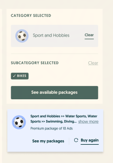

Quick Highlights
What is OLX?
OLX is a leading marketplace ecosystem serving more than 317 million C2C and B2C users to buy and sell new / used products globally.
Our users across 17 countries don't just find good deals — they help the environment too, leaning on a circular consumption cycle rather than a linear one.

Quick Highlights
What I do at OLX?
I'm responsible for all things design within the Engagement & Monetisation packs, under the Pay & Ship pillar.

Case study · OLX Group
OLX Ad Package
16 weeks of design timeline · In developmentOLX is monetised through Ad Limits, and one of the primary ways Sellers keep posting more ads is by buying Ad packages.
The updated Ad-package purchasing UX streamlines category selection and provides clearer guidance when buying Ad packages.
Shoutouts
Lorena (UX Writer), Małgorzata (Researcher), Claude (PM), Oana (CPO), Kuba (EM), Monica & Arsen (Jr. PD) — along with the Engineering & BI teams.

Background
Background
As a Seller on OLX you get a few free ads until you're required to pay — with the option to promote Ads to potential Buyers on a 30-day Ad life-cycle.


Research
Initiate research — Jobs to be Done
To begin, I ran 12 B2C & C2C Seller interviews to understand their Desires, Limitations and Catalysts when selling on OLX — with emphasis on the monetisation flows.
When
User
They would like to
Job step
So that
Catalysts

Prioritisation
Quantification to prioritisation
I surveyed Sellers on the importance & satisfaction of each problem area, then used Opportunity Scoring to generate an OpScore.
OpScore = Importance + max(Importance − Satisfaction, 0)

Problem
User Problem
Almost 80% of B2C and 90% of C2C Sellers drop at the category-selection page of the buy-package flow.
“I like the option to buy an Ad package in advance, but it gets tricky to find the same category in which I post multiple ads.” — Seller, research interview

Audit
Ran a UX audit on the buy-package flow


Test
We tested 2 concepts for usability with 10 users
Insights
- A4/8 struggled to associate dropdown categories with the dynamic offer. Task time was 15% lower than Production.
- B👑 7/8 were satisfied with the multi-level menu and appreciated the summary view. Task time was 28% higher than Production.
- AOnly 2/8 found the filter view easier to compare — and they ignored the 'see-more' CTA while comparing packages.
- B👑 With upfront category tags, 5/8 intuitively named categories as a variable for why price differs per package.
Takeaway
- →Primary/secondary/tertiary categories got associated with filters — adding cognitive load and failing the hypothesis.
- →Users found categories with ease; one suggested a shortcut to repeat the selection.
- →Most users expect offers to carry as much upfront information as possible.
- →Users don't always tap see-more — a long list of category tags can also add cognitive load.


Outcome
Work in progress
Variant B is in development for an A (Production) / B (Multi-level menu) test on production — Poland first.
During testing, a user suggested a shortcut to repeat the selection. Data showed ~31% of B2C users make a repeat purchase — so we added a shortcut banner surfacing the last purchased Ad package.
A package-recommendation feature is under moderation and rolling out across the Polish market. The same category-selection logic was adopted for mobile.
